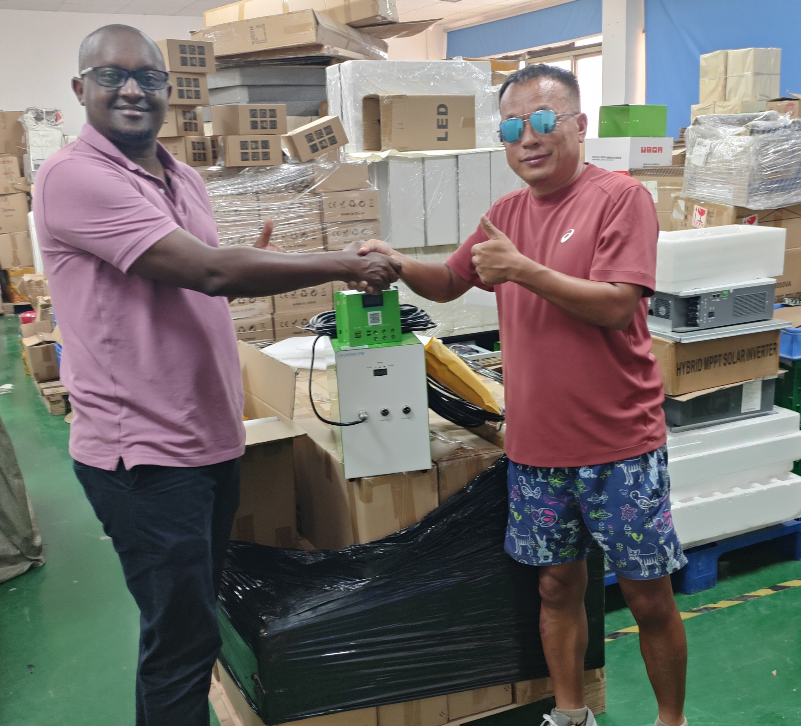
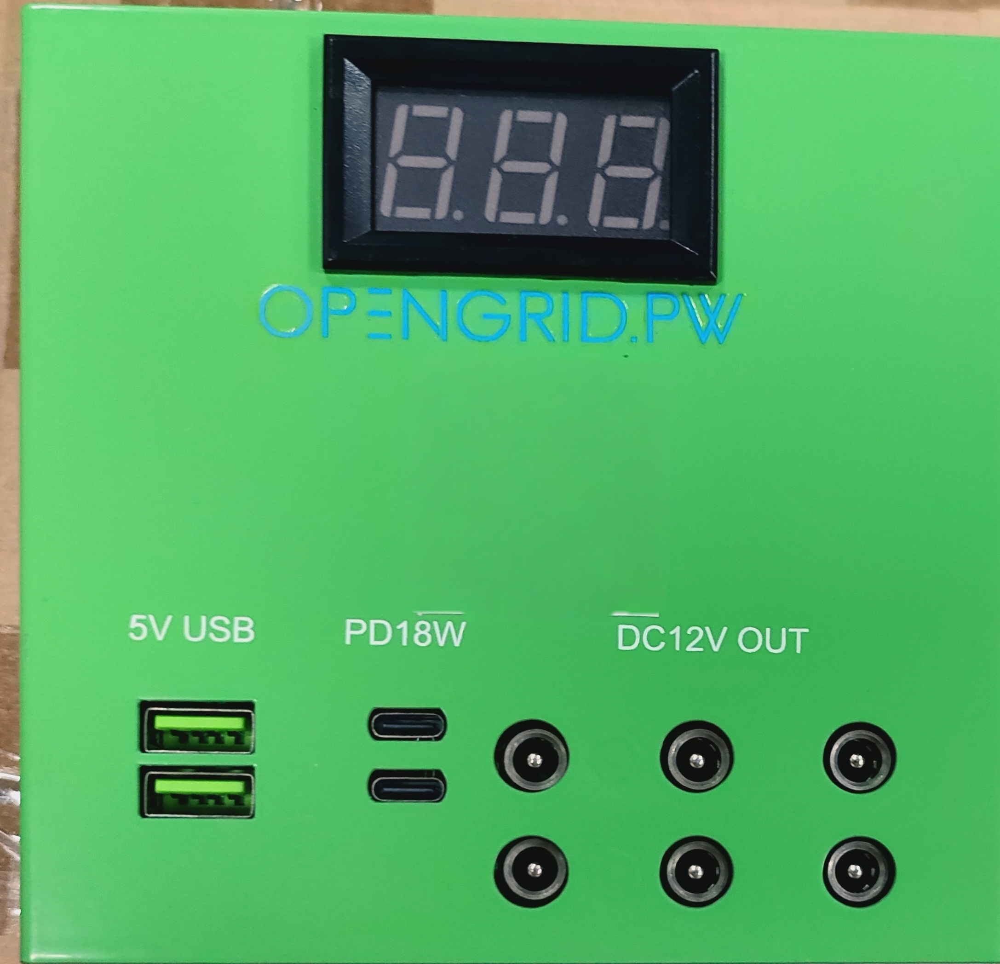
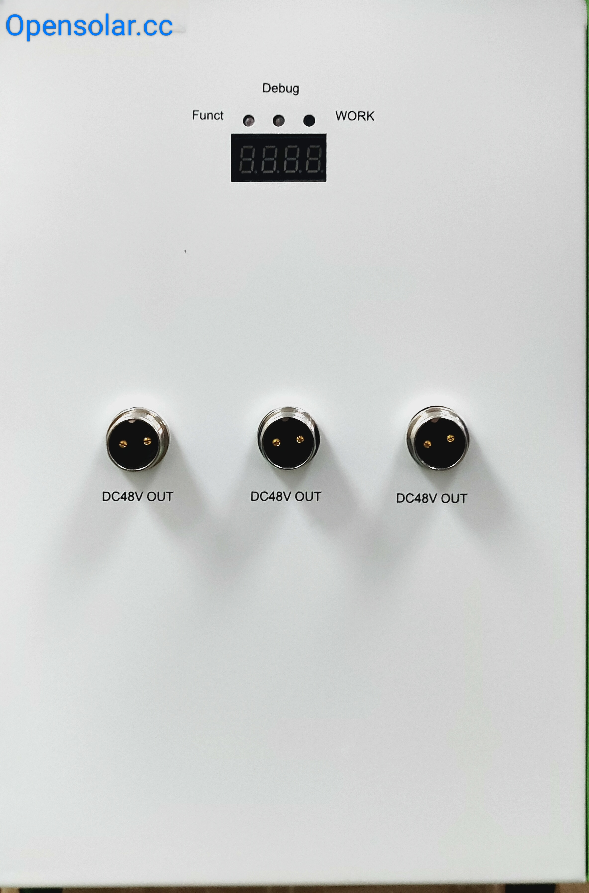

🚀 Rwanda Solar Donation Project 2026
First shipment en route · Expected to arrive in Kigali mid-August 2026
OpenSolar.cc's first batch of solar equipment has been procured and tested. On mid-June 2026, 50 systems departed Shenzhen by sea, bound for Kigali, Rwanda.
Shipment Timeline
mid-June 2026
📦 First 50 solar systems shipped from Shenzhen
June - August 2026
🚢 Cargo in transit by sea
Est. mid-August 2026
📍 Expected arrival in Kigali, Rwanda
August 2026
💡 Equipment distribution and installation (dates TBD)
📋 Cargo Manifest
- Solar panels × 50
- Smart microgrid solar controllers × 10 (built-in lithium battery, multi-function DC output module)
- Household control modules × 20
📍 Destination
Kigali, Rwanda
Distribution to off-grid communities via local partner coordination.
📊 Project Goals
- Install solar panels for off-grid households
- Deploy smart microgrid controllers to build small DC microgrids
- Install household control modules for 20 homes
- Establish local maintenance training and build experience for future batches
Photo Gallery



Follow the Project
We will post real-time updates on shipping progress, arrival, and distribution photos on GitHub.